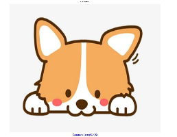
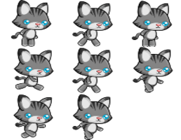
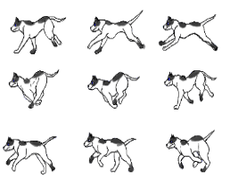
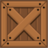
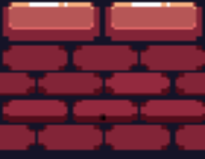
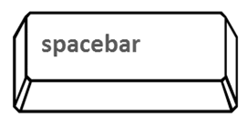

Manual
Introducción
- Número de jugadores: 1 jugador
- Duración aproximada del juego: 5 minutos
- Edad mínima recomendada: 10 años
- Tipo: Video Juegos en la Web
- Género: Amistoso
Conozcamos los elementos:

Inicio
Pantalla de inicio para dar click e iniciar el juego

Cat
El personaje principal de nuestro juego debe huir de varios obstáculos

Perro
Este es el villano del videojuego, debes evitar encontrarlo durante el camino.

Bloques de madera
Se muestra el resultado obtenido luego del proceso de ideacion, desarrollo y testing de la idea inicial
A continuacion el manual final y los ultimos cambios.

Suelo
Representa el camino de cat, en ciertos puentos el camino desaparece recuerda saltar para no morir.
Controles

Barra espaciadora
Esta te ayudara a saltar